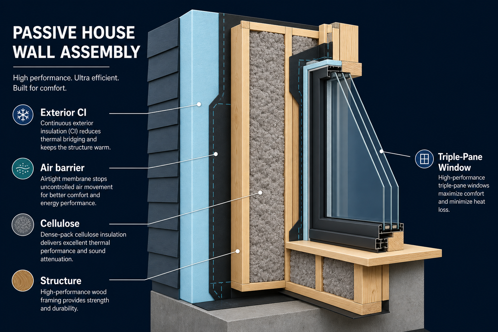
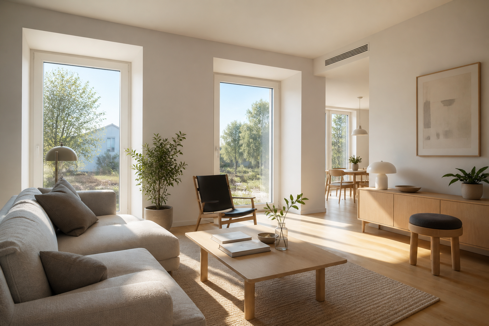

What changed in Passive House standards for 2026 builds
Passive House Institute US (Phius) 2024 is live, heat-pump criteria tightened, some big federal credits are winding down—and the residential envelope recipe that keeps showing up still looks like the right place to start.

ExtraReach is still in the planning stage. That means I’m spending more time with standards, incentive calendars, and case studies than with framing packages—and honestly, this year the paperwork side moved almost as fast as the product side.
Here’s what I’m carrying forward for a 2026-oriented residential Passive House, written for someone (me) who wants comfort and near-zero energy use without treating certification as a mystery cult.
Phius 2024: what’s live, and why cooling got louder
Phius 2024 is live for new contracts. From the outside, the biggest shift I’m paying attention to isn’t a slogan—it’s that cooling loads get more emphasis for dense multifamily, where internal gains and limited envelope area change the math compared with a detached house.
Two other Phius details that matter for planning:
- Electricity source energy factor (SEF) of 2.0 — how grid electricity is counted in the energy budget. It affects how solar and electrification show up in modeled performance.
- U.S. Department of Energy (DOE) Zero Energy Ready Home (ZERH) as a co-requirement for multifamily — if you’re in that building type, Phius and ZERH aren’t separate hobby tracks anymore.
For retrofits, Phius points to the REVIVE 2024 path (Assessment + ADORB). The practical deadline I’ve circled: retrofits must use that path by September 1, 2026. Even though ExtraReach is new construction planning, I’m watching retrofit rules because they reveal where the industry expects airtightness and mechanicals to land.
I’m designing as if Phius 2024 is the default conversation with any rater or modeler—and I’m not assuming last year’s cooling assumptions still hold, especially if the project ever scales beyond a single home.
Passive House Institute (PHI) heat pumps & transparent components
On the PHI side, heat pump criteria v1.2 (2026) plus more transparent component data are pushing me toward a simple preference: PHI-certified heat pumps and windows when I’m feeding the Passive House Planning Package (PHPP). Not because a sticker magically makes a house better—but because certified performance data reduces the “hope and spreadsheet” gap when you’re modeling a low-load building.
For a residential build, that pairs naturally with right-sizing. The load is supposed to be small; the equipment should be small too.
Spec preference: PHI-certified (or otherwise PHPP-friendly) heat pumps and windows first; then size the air-source heat pump (ASHP) to the modeled load—not to a contractor’s habit of “one ton per 500 sq ft.”
The residential recipe that keeps proving out
Standards change. The wall that works in cold and mixed climates keeps looking familiar:
- Cellulose-filled double-stud wall
- Exterior CI
- A deliberate, continuous air barrier
- Right-sized ASHP
- High-efficiency energy recovery ventilator (ERV)
Phius’s February 2026 project spotlight on Spark Side is a useful reality check: roughly 0.25 air changes per hour at 50 Pascals (ACH50), with a Zehnder ERV, Mitsubishi heat pump, and Source Zero involvement. I’m not copying the project blindly—I’m treating it as evidence that the “boring” envelope + right-sized mechanicals stack still delivers.

My default stack stays: cellulose double-stud + exterior CI + air barrier + right-sized ASHP + high-eff ERV. Certification targets will refine numbers; they shouldn’t reinvent the recipe.
Incentives: federal clocks, state and utility still matter
This part is time-sensitive, so I’m stating it carefully from the IRS FAQ on modifications under Public Law 119-21 (often called the One Big Beautiful Bill, or OBBB):
- §25C and §25D — not available after December 31, 2025
- §45L — not available after June 30, 2026 under OBBB
If you’re reading this in September 2026, that means the federal residential efficiency / clean-energy credit landscape ExtraReach was watching has largely shifted. My planning lean is clear: state and utility programs matter more than nostalgia for expired federal line items. One example I’m tracking for single-family Passive House territory is Mass Save’s SF Passive House incentive range of roughly $25–40k—the kind of number that can still move envelope decisions even when federal §25C/§25D/§45L no longer apply to a timeline.
Budget incentives from state/utility programs first. Treat expired federal credits as history—not as line items in a 2026+ pro forma.
Policy signals worth watching
Two policy notes that don’t change my wall assembly, but do change the “why bother with Passive House” conversation in some markets:
- Washington 2SHB 1183 — Passive House setback/height relief. When zoning rewards better envelopes, certification stops being only a personal virtue project.
- Illinois stretch code — Phius as an alternate compliance path (ACP). That makes Passive House modeling a code strategy, not just a badge.
ExtraReach may or may not land in those jurisdictions. I’m still filing them under “proof that the policy world is catching up to the physics.”
What I’m doing next
For the next few weeks of ExtraReach planning, I’m keeping the focus narrow:
- Lock a climate-appropriate envelope sketch (double-stud + CI + air barrier).
- Shortlist PHI-friendly windows and a right-sized ASHP + ERV pairing.
- Map state/utility incentives for the actual build location—not last year’s federal menu.
- Read Phius 2024 and PHI component docs like a builder, not like a collector of PDFs.
If you’re on a similar path: the standards moved, the incentives moved, and the good residential recipe mostly didn’t. That’s oddly comforting.